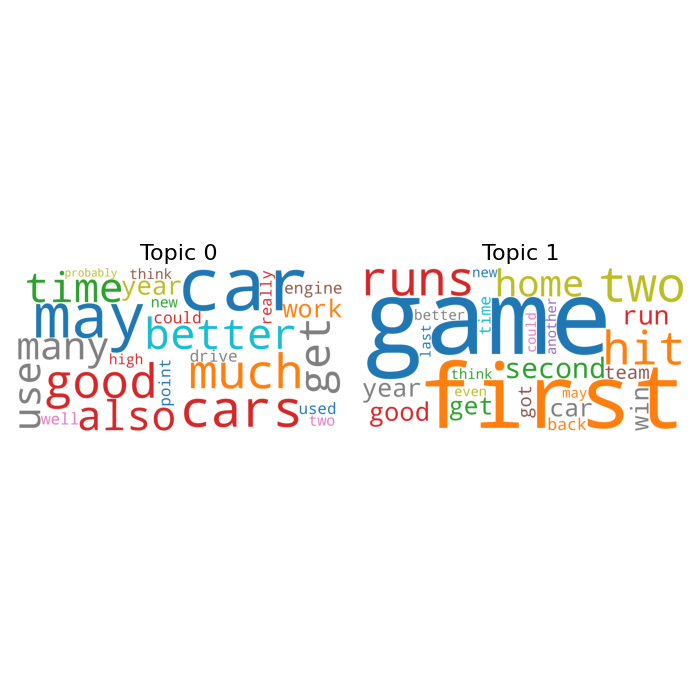

Note
Go to the end to download the full example code
Fitting TLDA on UCI-Newsgroups
In this example, we show how to run TLDA on a subset of the UCI 20 Newsgroups dataset.
[nltk_data] Downloading package stopwords to /home/runner/nltk_data...
[nltk_data] Unzipping corpora/stopwords.zip.
Loading dataset with 2 topics: Autos and Baseball
Running tensor LDA
Creating image to display fitted topics
import numpy as np
import nltk
nltk.download('stopwords')
from nltk.corpus import stopwords
stop_words = list(stopwords.words('english'))
from sklearn.feature_extraction.text import CountVectorizer
from sklearn.datasets import fetch_20newsgroups
from wordcloud import WordCloud
import matplotlib.pyplot as plt
# Import TensorLy
import tensorly as tl
# Import functions from tensor lda method
from tlda.tlda_wrapper import TLDA
seed = 0
tl.set_backend("numpy")
np.random.seed(seed)
print("Loading dataset with 2 topics: Autos and Baseball")
# Fetch data from 20 newsgroups dataset
categories = ['rec.autos', 'rec.sport.baseball']
newsgroups_test = fetch_20newsgroups(remove=('headers', 'footers', 'quotes'),
categories=categories)
texts = newsgroups_test.data
# Generate count vectors from documents.
vectorizer = CountVectorizer(min_df = 0.05,
max_df = 0.2,
ngram_range = (1, 2),
stop_words = stop_words)
vectors = vectorizer.fit_transform(texts).toarray()
vocab = vectorizer.get_feature_names_out()
print("Running tensor LDA")
# Initialize Tensor LDA
k = len(categories)
tlda = TLDA(
n_topic = k, alpha_0 = 0.01, n_iter_train = 2000, n_iter_test = 10,
learning_rate = 1e-5, pca_batch_size = 10000,
third_order_cumulant_batch = 10, theta=5.005, ortho_loss_criterion = 1,
random_seed = seed, n_eigenvec = k*5
)
# Fit Tensor LDA
tlda.fit(vectors)
print("Creating image to display fitted topics")
# Generate a wordcloud from the topics
topic_order = np.argsort(tlda.weights_)
cloud = WordCloud(stopwords=stop_words,
background_color='white',
width=1000*k,
height=1000,
max_words=25,
colormap='tab10')
fig, axes = plt.subplots(1, 2, figsize=(7, 7),
sharey=True)
for i, ax in enumerate(axes.flatten()):
fig.add_subplot(ax)
if i < k:
cloud.generate_from_frequencies(dict(zip(vocab, tlda.unwhitened_factors.T[topic_order[i], :])))
plt.gca().imshow(cloud)
plt.gca().set_title('Topic ' + str(topic_order[i]), fontdict=dict(size=16))
plt.gca().axis('off')
plt.subplots_adjust(wspace=0, hspace=0)
plt.axis('off')
plt.margins(x=0, y=0)
plt.tight_layout()
plt.show()
Total running time of the script: (0 minutes 12.859 seconds)